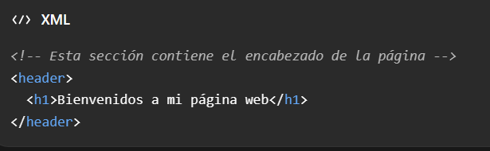
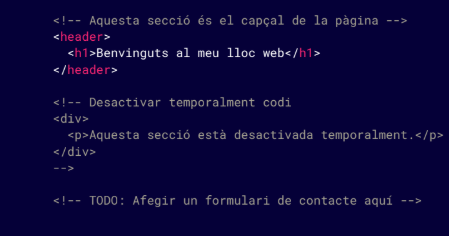
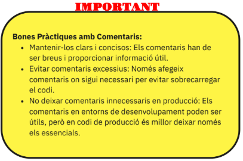

Los comentarios son notas dentro del código HTML. Sirven para explicar algo a las personas que leen o editan el código, pero no aparecen en la página que ve el usuario.

También se pueden usar para dejar recordatorios o para ocultar temporalmente una parte del código. Conviene escribir comentarios breves y útiles para que el código siga siendo fácil de entender.


Aunque el comentario no se vea en la página, normalmente sí queda dentro del código que se descarga. Por eso, no pongas ahí contraseñas ni información privada.